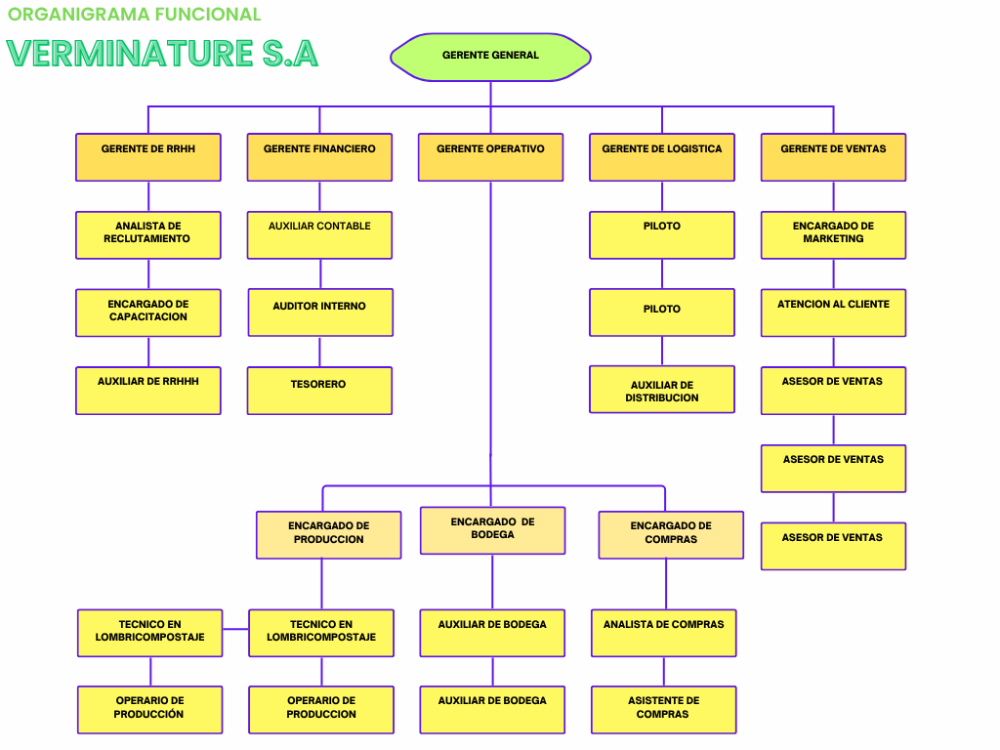
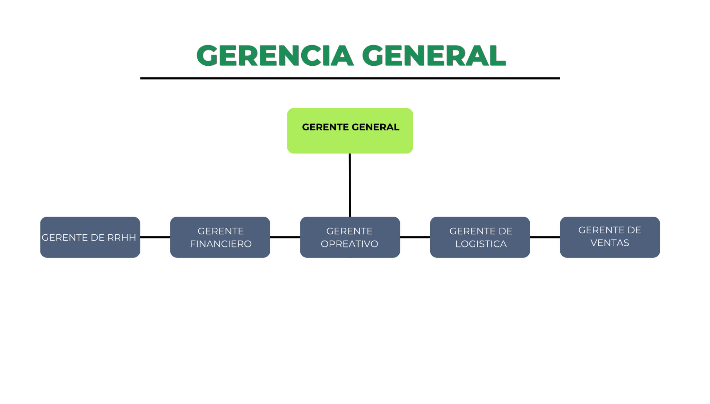
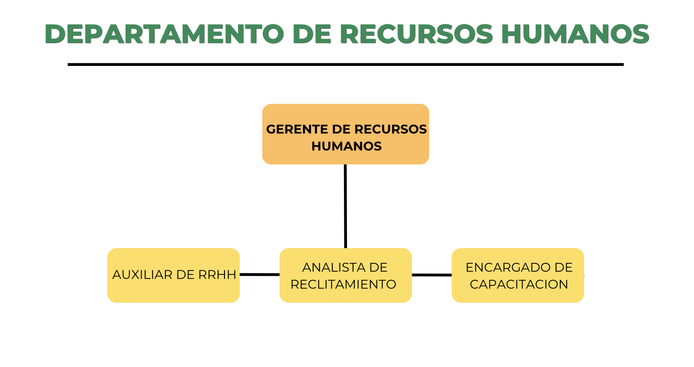
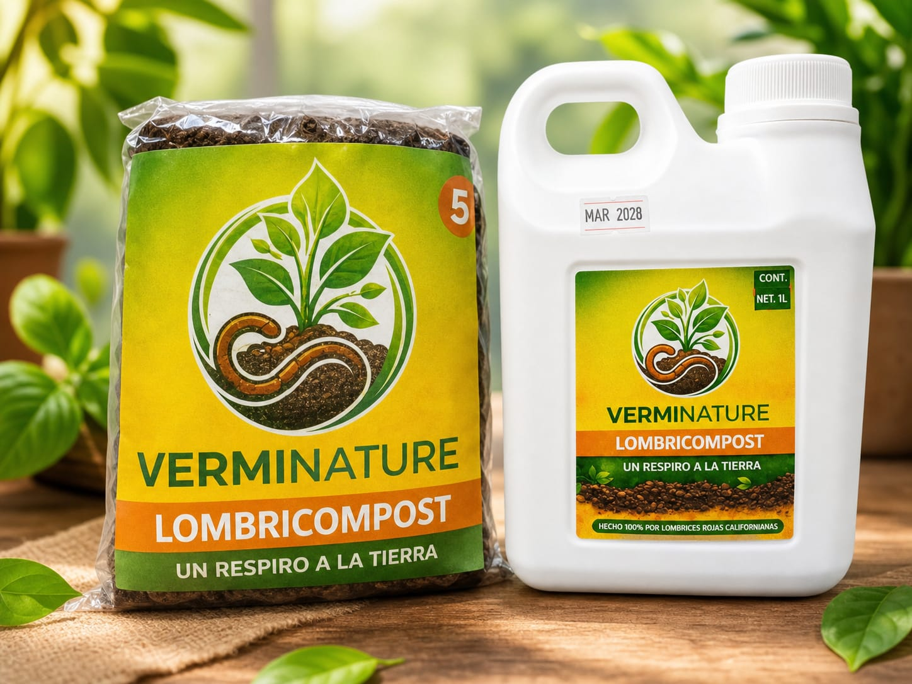

Verminature
Un respiro a la tierra 🌱
Misión
Brindar productos útiles y eficaces transformando desechos en abonos accesibles.
Visión
Ser referente agrícola en Guatemala para el año 2030.
Objetivos
- Procesar 30 toneladas mensuales
- Mantener calidad con pH entre 6.5 y 7.5
- Alcanzar el 25% del mercado local
Identidad Empresarial
Verminature es una organización biotecnológica privada orientada a resolver problemáticas ambientales mediante soluciones sostenibles.
Valores
- Liderazgo transformacional
- Comunicación bidireccional
- Sostenibilidad ambiental
- Mejora continua
Productos
- Humus
- Lixiviado
- Núcleos de lombriz
Inversión Inicial
- Infraestructura: Q4,927,000
- Equipo: Q122,000
- Capital de trabajo: Q521,800
- Total: Q5,570,800
Operación Mensual
- Costos fijos: Q221,900
- Costos variables: Q39,000
- Total: Q260,900
Rentabilidad
- Ventas: Q486,850
- Utilidad: Q225,950
- Punto de equilibrio: 15 toneladas
- Retorno: 25 meses
Análisis Financiero
Resumen de inversión, costos y rentabilidad del proyecto.
Distribución de Inversión
La mayor inversión se destina a infraestructura.
Costos vs Ingresos
Proyección de Utilidad
Operaciones
Proceso Productivo
- Precompostaje > 55°C
- Control de humedad al 60%
- Proceso de 45 a 60 días
Producción
- 15 toneladas de humus
- 15,000 litros de lixiviado
- 90 libras de núcleos
Planes de Contingencia
La empresa cuenta con protocolos diseñados para mitigar riesgos operativos y garantizar la continuidad del proceso productivo ante eventos adversos.
Olas de Calor Extremo
- Incremento de riego para mantener humedad entre 70% y 80%
- Uso de coberturas para reducir la exposición directa al sol
- Monitoreo constante de temperatura en las camas
Control de Plagas
- Instalación de barreras físicas contra hormigas
- Uso de métodos naturales para evitar aves
- Supervisión periódica del área de producción
Escasez de Materia Orgánica
- Alianzas con mercados locales para asegurar suministro
- Recolección programada de residuos orgánicos
- Almacenamiento estratégico de materia prima
Mercado Objetivo
- Agricultores
- Cafetaleros
- Viveros
- Jardinería urbana
Estructura Organizacional
Verminature cuenta con una estructura organizacional de tipo funcional, diseñada para optimizar la eficiencia mediante la especialización de cada área. La dirección general coordina los distintos departamentos clave de la empresa.
Organigrama Funcional
El organigrama funcional refleja la jerarquía de la empresa, encabezada por el Gerente General, seguido de los departamentos de Operaciones, Ventas, Finanzas y Recursos Humanos.

Lidia Lopez - Keila Menchu 01/04/2026
Organigrama General
El organigrama refleja la jerarquía de la empresa, encabezada por el Gerente General, seguido de los departamentos de Operaciones, Ventas, Finanzas y Recursos Humanos.

Lidia Lopez - Keila Menchu 01/04/2026
Distribución de Departamentos
Cada departamento cumple funciones específicas dentro de la organización: operaciones supervisa la producción, ventas gestiona la comercialización, finanzas controla los recursos y recursos humanos administra el talento.

Lidia Lopez - Keila Menchu 01/04/2026
Estrategias
- Pruebas de campo
- Alianzas con mercados
- Educación al cliente
- Sello ecológico
Productos
Verminature ofrece productos orgánicos de alta calidad derivados del proceso de vermicompostaje.
Humus de Lombriz
- 15 toneladas mensuales
- Alta retención de humedad
- Mejora microbiológica
Lixiviado
- 15,000 litros mensuales
- Concentrado y diluido
- Absorción rápida
Núcleos de Lombriz
- 90 libras mensuales
- Alta reproducción
- Adaptabilidad

Trabaja con Nosotros
En Verminature creemos en el desarrollo sostenible y en la creación de oportunidades laborales dignas. Nuestro equipo está conformado por profesionales comprometidos con la innovación agrícola y el cuidado ambiental.
Cultura Organizacional
Promovemos un ambiente basado en liderazgo transformacional, trabajo en equipo y comunicación bidireccional entre todos los niveles de la empresa.
- Capacitación constante
- Trabajo colaborativo
- Compromiso ambiental
- Mejora continua
Áreas de Trabajo
- Departamento Operativo
- Departamento de Ventas
- Departamento Financiero
- Recursos Humanos
- Logística y Producción
Nuestro Compromiso
Verminature busca generar empleos dignos y oportunidades de crecimiento profesional, contribuyendo al desarrollo económico y ambiental de Guatemala.